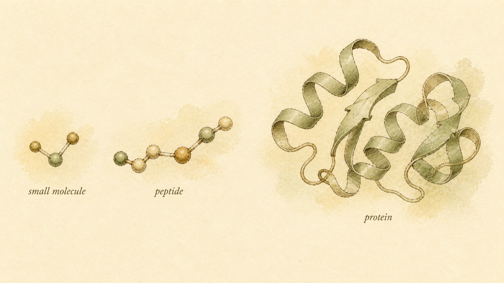
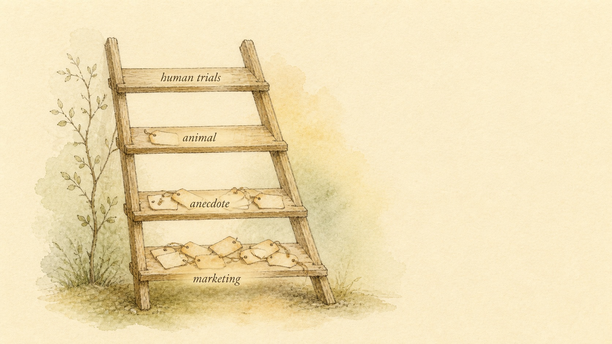

One Foundation, Seven Families
Peptides I built the shared vocabulary: what a peptide is, how it signals, how to grade a claim. This module spends that vocabulary on repair, skin, inflammation, immunity, the nervous system, pigmentation, and longevity, a set of families where honest grading matters more than almost anywhere else in this catalog.
Willa spent four months in physical therapy for a stubborn Achilles tendon that would not fully settle down, and somewhere around month two she started reading. A recovery forum mentioned "BPC" and "TB-500" in the same breath as her physical therapist's exercises, credited by strangers with tendon recovery that sounded faster than anything her own clinic had promised. A coworker, unrelated to any of that, mentioned her dermatologist had recommended a "copper peptide" serum for the fine lines around her eyes. Her cousin, a nurse, mentioned in passing that a relative recovering from a serious infection had been given something called "thymosin" as part of his hospital care. And a friend who worked long, foggy night shifts swore that a nasal spray called "semax" was the only thing that got her through a shift without falling apart. Four completely different situations, a tendon, a wrinkle, an infection, a foggy brain, and one word sitting underneath all four of them: peptide.
That collision is exactly the terrain this module covers, and this first chapter exists to make sure a learner can walk into it steady on their feet, whether or not they have taken this platform's companion module on growth, metabolic, and body-composition peptides first. This chapter re-establishes, in condensed form, the three ideas every later chapter in this module leans on: what a peptide structurally is, and how it differs from a small molecule on one side and a full protein on the other; how a peptide typically signals, mostly by knocking at a receptor sitting on the outside of a cell rather than slipping inside it; and the evidence ladder, a way of asking exactly how much a specific claim about a specific compound is actually worth. Then, because this module's territory is genuinely different from the growth and metabolic compounds covered elsewhere on this platform, this chapter orients a learner to what lies ahead: tissue repair, cosmetic and regenerative peptides, anti-inflammatory and antimicrobial peptides, immune modulators, neuro and cognitive peptides, the melanocortin family, and a final cluster of longevity and systemic compounds. Say the honest part up front, because the rest of this module will keep returning to it: a large share of the compounds in these seven families sit low on the evidence ladder, resting on rodent data, cell-culture experiments, and enthusiastic anecdote rather than completed human trials. Grading each claim honestly, rather than borrowing the confidence that belongs to a stronger claim somewhere else, is the actual skill this module is built to teach.
Willa is 31, generally healthy, and not taking any peptide product herself. She is not here to be talked into or out of anything, and this module will not push her, or you, toward a decision either way. What she wants, and what brought her to this course, is the literacy to hold her tendon, her coworker's serum, her cousin's hospital story, and her friend's nasal spray in her head at the same time without treating them as four data points on the same curve. They are not. Figuring out exactly why, and building the habit of asking the same sharp questions of every peptide claim she meets from here forward, is what this chapter, and this module, exists to give her.
A short chain, not a small molecule and not a protein
Start where any honest treatment of this subject has to start. A peptide is a short chain of amino acids joined by peptide bonds, the specific chemical link formed when the carboxyl group of one amino acid reacts with the amino group of the next, releasing a water molecule and leaving the two joined head to tail. String enough of these together, one bond at a time, and a backbone forms, with each amino acid contributing its own distinct side chain hanging off that backbone. The identity of a given peptide, its shape, its charge, and ultimately what it does once it reaches a receptor, comes down almost entirely to the specific sequence of those side chains, drawn from the same shared alphabet of twenty naturally occurring amino acids that builds every peptide and protein in the human body.
What separates a peptide from its two chemical neighbors comes down mostly to size. According to Fosgerau and Hoffmann (2015), pharmaceutical research has long split its catalog into small molecule drugs, typically under about 500 daltons (a dalton being a unit of molecular mass, roughly the mass of a single hydrogen atom) and generally compact enough to be absorbed through the gut and taken as a standard pill, and much larger biologic drugs, typically folded proteins well over 5,000 daltons that usually cannot survive digestion and must be injected. A working definition used throughout this module places a peptide in the gap between those two worlds, roughly two to fifty amino acids, short enough that it does not reliably fold into the complex, self-supporting three-dimensional architecture that defines a true protein, but long enough, and structurally specific enough, that it behaves nothing like a simple small molecule such as aspirin or testosterone. Fosgerau and Hoffmann (2015) note that this middle territory has drawn substantial and growing pharmaceutical interest precisely because a peptide can combine some of a large biologic's selectivity with some of a small molecule's manufacturing simplicity, and by the time of their review, approximately 140 peptide therapeutics were already in active human clinical development.
This module's own compounds sit across a wide stretch of that range, and naming a few now previews the territory ahead. GHK-Cu, the copper-binding tripeptide behind the cosmetic serum Willa's coworker mentioned, is only three amino acids long, about as short as a peptide gets. BPC-157, the tendon-and-gut compound behind her forum reading, runs fifteen amino acids. Thymosin alpha-1, the immune-modulating peptide behind her cousin's hospital story, runs twenty-eight. Semax, behind her friend's nasal spray, is a seven-amino-acid fragment related to a much larger pituitary hormone. Across that entire span, three residues to twenty-eight, the same defining features hold: a chain of amino acids linked by peptide bonds, too small to fold into a stable protein architecture, too large and too structurally specific to behave like a compact small molecule you could reasonably expect a stomach to leave intact.
That size and structure carries a direct practical consequence worth naming before the next section makes it explicit: almost every compound in this module arrives as an injectable, a nasal spray, or a topical formulation rather than a swallowed tablet, because a chain of amino acids carrying charged, polar side chains is both too large and too chemically fragile to survive the digestive tract intact in most cases. A small number of peptide medicines have been engineered with absorption enhancers and protective coatings to survive oral delivery, but they remain the exception this module will flag by name when it applies, not the default a learner should assume for any given compound.

One more piece of vocabulary matters before moving on, because Willa's four stories will not make sense without it. "Peptide" describes a molecular shape, nothing more. It does not describe a regulatory status, a safety rating, or a level of evidence, and a compound can be, chemically, a peptide whether it is a government-approved medicine studied in tens of thousands of patients, a physician's off-label prescription of an already-approved compound, or an unregulated vial sold from a website with no independent verification of what is actually inside it. This module's companion course on growth and metabolic peptides covers that three-world split, approved medicine, off-label use, and grey-market product, in full. Here, the short version is enough: knowing that a compound is a peptide tells a learner its rough size and shape. It tells them nothing about how strong the evidence behind a specific claim about that compound actually is, which is exactly the gap the rest of this chapter exists to close.
Mostly a knock at the door: how a peptide signals
A steroid hormone like testosterone, covered in depth in this platform's companion course on anabolic-androgenic steroids, is lipid soluble and can diffuse directly through a cell's outer membrane, reaching a receptor waiting inside the cytoplasm before traveling into the nucleus to alter gene transcription over days to weeks. A peptide almost never gets to use that route. Peptides are built from amino acids carrying charged and polar side chains, which makes most peptides hydrophilic, water soluble, and largely unable to slip through the fatty, water-repelling interior of a cell membrane the way a compact steroid can. A peptide arriving at a cell is, chemically, stopped at the door.
Stopped at the door does not mean unable to act, it means the signal has to be relayed rather than delivered directly. The large majority of peptide hormones and peptide drugs, including nearly every compound this module covers, act on receptors sitting on the outer surface of the cell. The single largest family of these surface receptors is the G protein-coupled receptor (GPCR) family, a group of proteins that weave back and forth across the cell membrane seven times, presenting a binding pocket to the outside world and a signaling face to the cell's interior. According to Hauser et al. (2017), roughly a third of all medicines approved by the United States Food and Drug Administration act at a GPCR, making this receptor family, by a wide margin, the single most successful drug target class in modern pharmacology, and a large share of that success has come specifically through peptide and peptide-like ligands binding these surface receptors. When a peptide binds that outer pocket, the receptor changes shape, activates an associated G protein just inside the membrane, and that G protein switches on an intracellular relay, often a shift in a small signaling molecule called cyclic adenosine monophosphate (cyclic AMP), a change in intracellular calcium, or a cascade of enzyme-activating kinases. The peptide itself never has to cross the membrane to produce an effect.
This architecture matters for a reason this module will return to constantly: it explains why the compounds ahead cluster into families by the receptor system they engage rather than by what they are marketed to do. BPC-157 and thymosin beta-4, covered in the next chapter, are proposed to act through growth-factor and angiogenesis-related signaling. GHK-Cu, covered in Chapter 3, engages copper-transport and matrix-remodeling pathways in skin and connective tissue. KPV, covered in Chapter 4, is a fragment of a much larger melanocortin precursor and shares signaling territory with the melanocortin receptors covered later in Chapter 7. Thymosin alpha-1 and the other immune modulators in Chapter 5 act on receptors expressed across the immune system's own cell surface. None of these are separate, unrelated categories of chemistry. They are the same basic surface-receptor logic, applied to different receptor families expressed in different tissue, which is exactly the same lesson this platform's steroid-focused course teaches about the androgen receptor, one core mechanism, read differently by whatever tissue happens to be listening.
The practical, felt consequence of surface-receptor signaling is speed, and it is worth being precise about what that does and does not promise. A second-messenger cascade triggered at the membrane can alter an already-existing enzyme's activity within seconds to minutes, because the machinery doing the work is already sitting in the cell, waiting to be switched on. That is categorically faster than a steroid's genomic route, which has to alter gene transcription and then wait for new protein to accumulate over days to weeks. But fast at the receptor does not automatically mean fast, or large, at the level of a whole tendon healing, a whole immune system recovering, or a whole mood shifting. Those outcomes still depend on the cascade being sustained, repeated, and layered onto everything else a living tissue is doing, and this module will be careful, compound by compound, to separate how quickly a receptor responds from how quickly, or whether, a person is likely to notice anything at all.

The evidence ladder, and why this module needs it more than most
This chapter's real deliverable is not a fact, it is a tool: a consistent way of asking, for any specific claim about any specific peptide, exactly what kind of evidence actually stands behind that sentence. Call it the evidence ladder. According to Murad et al. (2016), the traditional image for this idea, a pyramid with weaker evidence at a wide base and stronger evidence at a narrow peak, has served as an influential teaching tool in medicine for decades, even as researchers continue refining exactly how its layers should be organized and weighted against each other. For the purposes of grading a single peptide claim, a simplified four-rung version does the job.
At the top rung sits the human randomized controlled trial (RCT), or a systematic review pooling several of them. Participants are randomly assigned to receive either the compound being tested or a comparison, often a placebo, that assignment is concealed from participants and frequently from investigators too (a design feature called blinding), and the outcome is measured in a prespecified, objective way. Randomization is what allows a researcher to reasonably attribute a difference between groups to the compound itself rather than to some other, unmeasured difference between the people who happened to land in each group. The next rung down holds smaller human studies, open-label trials without a control group, small pilot studies, and case series. These generate genuine human data and are often a legitimate, necessary step toward a larger trial, but without a control group, blinding, or a large enough sample, they remain considerably more vulnerable to placebo effect and chance than a well-designed randomized trial.
Below that sits animal and preclinical evidence, rodent studies, zebrafish and other model-organism studies, and cell-culture experiments run entirely outside a living organism. This is frequently where a compound's mechanism gets first characterized, and it is genuinely indispensable for early safety screening and hypothesis generation. But a result in a mouse, or in a dish of isolated cells, is not a result in a human, for reasons of species-specific metabolism, receptor distribution, and whole-body physiology, and this module, more than almost any other on this platform, will be repeating that distinction constantly, because so much of what fills the chapters ahead sits precisely on this rung. At the bottom rung sits anecdote and vendor marketing, individual self-reports, forum testimonials, before-and-after stories, and a manufacturer's or vendor's own product-page claims. None of it carries any built-in control for placebo effect, expectation, concurrent lifestyle change, or selective reporting, and a vendor's financial stake in describing its own product favorably is about as large a conflict of interest as exists anywhere in this subject.
None of the lower rungs are worthless, and this chapter is not asking anyone to dismiss them. A rodent study is real evidence. A forum thread full of independently, consistently reported experiences is worth noticing. The actual skill being taught is calibration, matching the confidence a learner extends to a claim with the rung that claim actually rests on, rather than treating every sentence that sounds scientific as though it automatically occupied the top of the ladder.
Seven families, one honest warning
With the shared foundation in place, this chapter can now do the job specific to this module: orient a learner to what the next eight chapters actually cover, and preview, honestly, where each family tends to sit on the ladder just described. This module groups its compounds into seven working families, organized by mechanism and intended use rather than by marketing category, and every single one of them will be treated the same way in the chapters ahead, its plainly stated intended use next to its receptor-level mechanism next to its evidence grade, so a learner can hold all three at once.
The first family, covered in Chapter 2, is tissue repair, led by BPC-157 and thymosin beta-4 (also called TB-500). Both are proposed to act through angiogenesis, the growth of new blood vessels into damaged tissue, and through growth-factor signaling relevant to tendon, ligament, and gut lining recovery, the exact territory Willa's forum reading fell into. According to Park et al. (2020), BPC-157's proposed cytoprotective and gut-barrier effects rest overwhelmingly on rodent and cell-based research, with essentially no completed human randomized controlled trial evidence behind the specific tendon and soft-tissue claims that circulate most widely online. The mechanism is genuinely interesting. The evidence, at the time of this writing, sits low on the ladder.
The second family, Chapter 3, is cosmetic and regenerative peptides, led by GHK-Cu, the copper-binding tripeptide behind Willa's coworker's serum. GHK-Cu is a naturally occurring peptide whose circulating levels decline with age, and it has been studied for collagen-signaling and wound-healing properties in skin. According to Hu et al. (2026), a recent study using a zebrafish inflammation model found that GHK-Cu reduced markers of oxidative stress and pro-inflammatory cytokine expression, real, peer-reviewed, mechanistically informative evidence, and also a clear illustration of this family's general position: promising animal and cell-based signal, a long history of topical cosmetic use, and comparatively thin controlled human trial data behind many of its more specific injectable claims.
The third family, Chapter 4, is anti-inflammatory and antimicrobial peptides, led by KPV, a small fragment derived from a larger melanocortin precursor, and LL-37, a naturally occurring human host-defense peptide. Both are proposed to calm inflammatory signaling and, in LL-37's case, to interfere directly with microbial membranes, work relevant to gut and skin conditions. The fourth family, Chapter 5, is immune modulators, led by thymosin alpha-1, the compound behind Willa's cousin's hospital story, and related thymic peptides thymulin and thymalin. Thymosin alpha-1 is notably further along the evidence ladder than most of this module's other compounds. According to Liu et al. (2016), a systematic review pooling nineteen randomized controlled trials found that thymosin alpha-1 treatment was associated with significantly reduced mortality in sepsis patients compared with control treatment, real human randomized trial evidence, even though the review's authors were careful to flag that trial quality and sample sizes still limited how confidently that finding could be generalized. This family is a useful reminder that "low evidence" is not a blanket rule for every compound in this module, and Chapter 5 will draw the line clearly between thymosin alpha-1 and thymosin beta-4 (from Chapter 2), two differently numbered, differently acting peptides that get confused constantly online purely because they share a first name.
The fifth family, Chapter 6, is neuro and cognitive peptides, led by semax, selank, DSIP (delta sleep-inducing peptide), and cerebrolysin, the compounds behind Willa's friend's nasal spray and the broader "nootropic peptide" conversation. These compounds carry proposed mechanisms involving neurotrophic signaling and neurotransmitter tone, and, with a small number of exceptions in specific clinical contexts abroad, the human evidence behind most of their attention, mood, and sleep claims remains thin, small, and short-term. The sixth family, Chapter 7, is the melanocortin peptides, led by PT-141 (bremelanotide) and melanotan II, which act on melanocortin receptors relevant to sexual function and skin pigmentation, alongside specific, well-documented risks around blood pressure and unwanted pigmentation change. This family also contains this module's clearest example of a compound sitting genuinely near the top of the ladder: according to Islam et al. (2026), setmelanotide, a melanocortin-4 receptor agonist, has been approved by the United States Food and Drug Administration for specific genetic obesity syndromes based on completed clinical trial data, standing in sharp contrast to melanotan II, a chemically related but unregulated compound sold outside any such pathway.
The seventh and final family, Chapter 8, is a longevity and systemic miscellany, epithalon, humanin, ARA-290 (cibinetide), and vasoactive intestinal peptide (VIP), proposed to touch telomerase activity, mitochondrial protection, and tissue-protective signaling respectively. This is, honestly, the family sitting lowest on the ladder as a group, resting almost entirely on preclinical and mechanistic research at the time of this writing. Chapter 9 then closes the module the way this platform's other deep courses close, with a shared examination of grey-market sourcing, contamination risk, legality, and the clinician boundary that applies across every family covered in between.
Notice the pattern sitting underneath all seven families, because it is the real content of this section, more than any specific compound name. A compelling receptor-level mechanism is not the same thing as a randomized trial, and this module will keep the two visibly separate in every chapter that follows. According to Fosgerau and Hoffmann (2015), developing a compound through the full regulatory approval pathway, preclinical safety work followed by phase 1 through phase 3 human trials, requires an enormous, sustained financial investment that a company generally only makes when a compound is patentable and can realistically earn back its cost through a controlled, exclusive market. A compound sold as an unregulated "research chemical" has often never had anyone with the financial incentive, or the legal standing, to fund that level of human testing at all, regardless of how promising its underlying biology looks in a rodent or a dish of cells. Low evidence, across most of this module, is frequently a statement about who could afford to run the trial, not a statement about whether the mechanism itself is real or interesting.
Case study: Willa and the four stories that were not one story
Running Willa's four stories back through this chapter resolves each of them in turn, and walking through that resolution explicitly is the real point, more than any single fact about any single compound. Her first, mostly unspoken assumption was that "peptide" itself was doing useful descriptive work, that calling something a peptide told her roughly what kind of product she was dealing with. Section one replaces that with the accurate picture: peptide describes a size and shape, a chain of somewhere around two to fifty amino acids, nothing about regulatory status, safety, or evidence. GHK-Cu at three amino acids, BPC-157 at fifteen, thymosin alpha-1 at twenty-eight, and semax at seven are all, structurally, peptides, and that fact alone tells her almost nothing useful about which of her four stories she should trust more than the others.
Her second assumption, closer to the surface, was that a fast-acting nasal spray and a hospital-administered treatment for a serious infection were doing roughly the same kind of thing to the body, just through different delivery methods. Section two replaces that with the mechanism itself: most peptides in this module act at a receptor on the outside of a cell, triggering a relay that can begin within minutes, but how quickly a receptor fires and how much a whole system changes as a result are two different questions, answered differently for different compounds, different doses, and different outcomes being measured.
Her third assumption, the one this chapter spent the most time on, was that "there's research on it" functioned as a single, satisfying stopping point, the same weight whether the source was a landmark clinical trial or a single rodent experiment linked from a product page. Section three, and the family-by-family preview that followed it, replace that with the evidence ladder: thymosin alpha-1, the compound behind her cousin's story, has real pooled randomized trial evidence behind its use in sepsis, according to Liu et al. (2016). BPC-157, the compound behind her Achilles research, and GHK-Cu, the compound in her coworker's serum, rest overwhelmingly on rodent and cell-based data, real evidence, but a different rung entirely. Semax, behind her friend's nasal spray, sits lower still, with human evidence that remains thin, small, and short-term. Four peptides, four genuinely different positions on the same ladder, and no way to tell them apart without actually climbing down and checking.
What Willa actually walked away with matters more than any verdict on any one of her four compounds, because it is the real product of this chapter. She did not leave with a ranking of which peptide is "best," a recommendation about her tendon, or an opinion about anyone else's medical care. She left with a habit: given any peptide name, ask what family it belongs to and what receptor system it is proposed to engage, ask what the strongest available evidence for the specific claim actually is, not the compound's reputation in general, and place that evidence honestly on the ladder before deciding how much confidence it has earned. That habit will not resolve every question this module raises in the chapters ahead. It gives her, and every learner working through this foundation, the tool to ask sharper questions of each one as this module gets there, which is exactly what a foundation chapter is for.
Where this module stops: understanding is not permission
Before this chapter closes, the frame governing this entire module needs to be stated plainly, because it shapes what these nine chapters are for and, just as importantly, what they are not for. This is education and harm reduction. Across repair, cosmetic, anti-inflammatory, immune, neuro, melanocortin, and longevity peptides alike, this module explains the biochemistry, the mechanism, the plainly stated intended use, and the honest evidence grade behind each claim, descriptively. It does not provide dosing guidance, stacking or combination protocols, or sourcing recommendations, and nothing in this chapter, or any chapter ahead, is meant to function as a green light or a how-to guide for using any compound discussed here.
That boundary is not a legal formality bolted onto the biology, it follows directly from it. Everything covered in this chapter, the size and structure that separates a peptide from a small molecule and a protein, the surface-receptor mechanism most of these compounds share, the evidence ladder, and the honest preview of where this module's seven families currently sit on it, is true independent of any individual's decision about whether to ever use any of these compounds. That understanding has value on its own, whether the person doing the learning ever acts on it, whether they are a learner like Willa trying to make sense of a forum thread, a coworker's serum, and a cousin's hospital story, a clinician wanting a plain-language mechanism refresher, or simply someone who wants to be able to evaluate a confident claim with real knowledge behind the evaluation. The legal and regulatory status of specific compounds varies by jurisdiction and by product, and this module does not offer legal advice of any kind.
Decisions about whether to use any peptide product, for tendon recovery, skin, immune support, cognitive focus, or anything else covered in the chapters ahead, and the ongoing medical evaluation of anyone already doing so, belong with a licensed clinician who can assess an individual's actual health history, actual symptoms, and actual risk profile. That remains true no matter how thoroughly a learner understands the mechanism, the family, or the evidence grade behind a given compound. Mechanism and evidence grade explain what a compound is and how strong the case for it currently is, in general. Neither one can tell a specific person, with a specific body and a specific history, what is safe or appropriate for them, and no chapter in this module will pretend otherwise.
This is exactly the discipline Willa's four stories called for, more than any specific fact about BPC-157, GHK-Cu, thymosin alpha-1, or semax. Sorting through claims made about her own recovering tendon, a coworker's skincare routine, a relative's hospital treatment, and a friend's nasal spray does not call for a diagnosis or a recommendation from this module, and it would not have called for one even if she had asked for it directly. What this chapter can responsibly give her, and what it is built to give every learner working through it, is the structural and evidentiary literacy to recognize an overconfident claim when she meets one, to ask a more precise question of a source, and to know exactly where her own understanding needs to hand off to a qualified clinician rather than to another forum post or product page. That handoff point is not a gap in what she has learned today. It is the single most useful thing this chapter can leave her with, and this module will keep returning to it, family by family, as the specifics get more detailed and the marketing gets louder.
Key Takeaways
- A peptide is a short chain of amino acids, roughly two to fifty residues, joined by peptide bonds. It sits structurally between a compact small molecule (like aspirin or testosterone) and a large, folded protein (like growth hormone or an antibody), and this module's own compounds span that entire range, from three-residue GHK-Cu to twenty-eight-residue thymosin alpha-1.
- Because most peptides are hydrophilic, they cannot diffuse across the cell membrane the way a lipid-soluble steroid can. The large majority act on receptors sitting on the outside of the cell, frequently a G protein-coupled receptor (GPCR), triggering a fast intracellular relay rather than the slower, gene-transcription route steroids use.
- "Peptide" is a chemistry term describing molecular size and shape, not a regulatory status, safety rating, or evidence grade. The same word covers government-approved medicines, off-label prescriptions, and unregulated grey-market products with no independent verification of content.
- The evidence ladder runs from human randomized controlled trials (RCTs) at the top, through smaller human studies, down to animal and preclinical evidence, and finally anecdote and vendor marketing at the bottom. A mechanism explaining how a compound could work is not evidence that it does.
- This module covers seven working families: tissue repair, cosmetic and regenerative peptides, anti-inflammatory and antimicrobial peptides, immune modulators, neuro and cognitive peptides, melanocortin peptides, and longevity and systemic compounds. Most sit low on the evidence ladder; a small number, like thymosin alpha-1 in sepsis and the approved melanocortin agonist setmelanotide, sit considerably higher.
- This module is education and harm reduction, not a protocol source. Understanding mechanism and evidence grade is valuable on its own and does not replace the judgment of a licensed clinician for any individual decision or health concern.
With the shared vocabulary and the evidence ladder in place, Chapter 2 puts both tools to work on the family Willa's own forum reading fell into: tissue repair. BPC-157 and thymosin beta-4 (TB-500) carry some of the most confident marketing language of any compounds in this module, and some of the thinnest completed human evidence behind that confidence. Chapter 2 traces their proposed angiogenesis and growth-factor mechanisms in detail, and grades exactly what the current evidence does and does not support.
References
Fosgerau, K., & Hoffmann, T. (2015). Peptide therapeutics: Current status and future directions. Drug Discovery Today, 20(1), 122-128. https://doi.org/10.1016/j.drudis.2014.10.003
Hauser, A. S., Attwood, M. M., Rask-Andersen, M., Schiöth, H. B., & Gloriam, D. E. (2017). Trends in GPCR drug discovery: New agents, targets and indications. Nature Reviews Drug Discovery, 16(12), 829-842. https://doi.org/10.1038/nrd.2017.178
Hu, J., Zhang, C., & Wang, F. (2026). Glycyl-L-histidyl-L-lysine-Cu2+ (GHK-Cu) attenuates CuSO4- or LPS-induced inflammation in zebrafish larvae model. European Journal of Pharmacology, 1023, 178880. https://doi.org/10.1016/j.ejphar.2026.178880
Islam, M. T., Amorim, M. R., & Polotsky, V. Y. (2026). Melanocortin 4 receptor signalling in sleep-disordered breathing. The Journal of Physiology, 604(10), 3728-3737. https://doi.org/10.1113/JP290177
Liu, F., Wang, H. M., Wang, T., Zhang, Y. M., & Zhu, X. (2016). The efficacy of thymosin α1 as immunomodulatory treatment for sepsis: A systematic review of randomized controlled trials. BMC Infectious Diseases, 16, 488. https://doi.org/10.1186/s12879-016-1823-5
Murad, M. H., Asi, N., Alsawas, M., & Alahdab, F. (2016). New evidence pyramid. Evidence-Based Medicine, 21(4), 125-127. https://doi.org/10.1136/ebmed-2016-110401
Park, J. M., Lee, H. J., Sikiric, P., & Hahm, K. B. (2020). BPC 157 rescued NSAID-cytotoxicity via stabilizing intestinal permeability and enhancing cytoprotection. Current Pharmaceutical Design, 26(25), 2971-2981. https://doi.org/10.2174/1381612826666200523180301